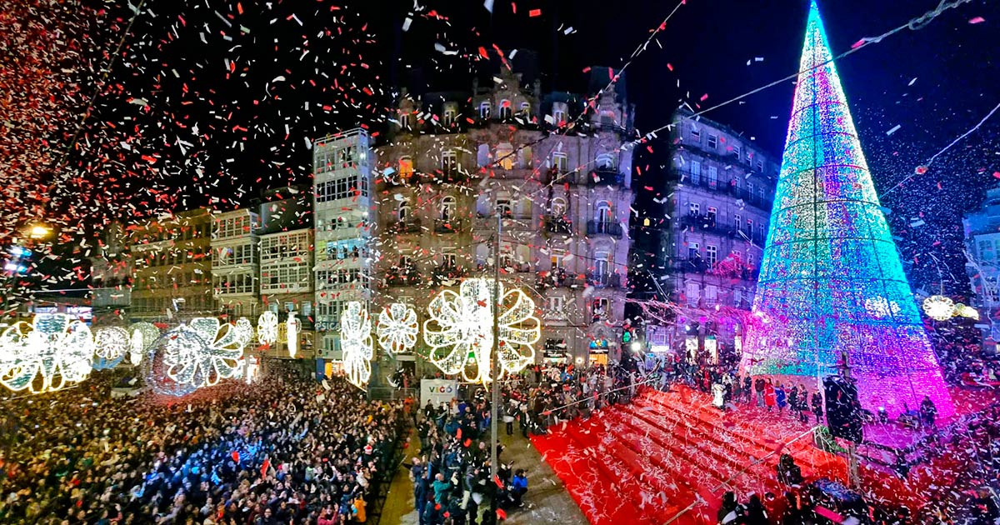
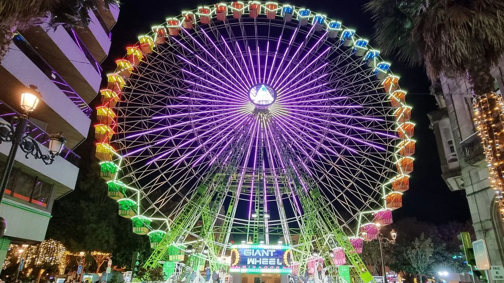
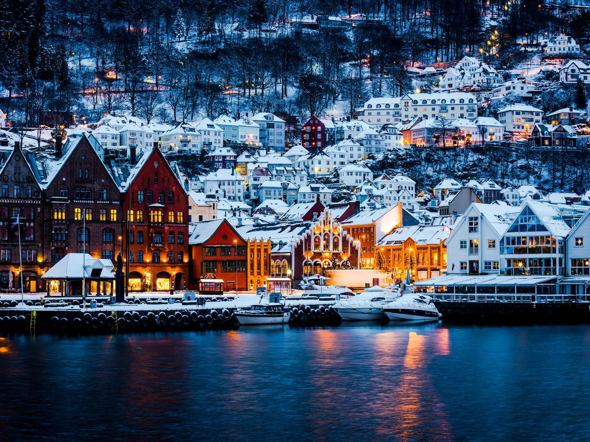

¿Buscando un viaje de mercadillos navideños, iluminación, atracciones y esa atmósfera mágica.Desde hace pocos años emerge una ciudad gracias a millones de luces led, una noria gigante y decorados de ensueño, compitiendo en alumbrado con la misma Nueva York, Londres o París

La Navidad en Nueva York es mágica. Los estadounidenses se esfuerzan mucho decorando sus casas, también adornan los escaparates de las tiendas y las calles con mucho empeño.Tiene las mejores decoraciones con miles y miles de luces por tods uss grandes edificios

Las Navidades noruegas están repletas de tradiciones y agradables ceremonias, algunas de ellas reminiscencias de antiguas supersticiones.La nieve y la decoración hacen de ésta una época realmente mágica.Las calles brillan con las luces de Navidad, Papá Noel ha venido a la ciudad